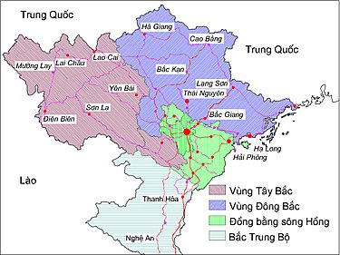
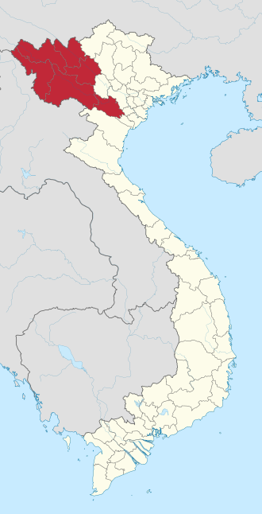

Không gian địa lý của vùng Tây Bắc hiện còn chưa được nhất trí. Một số ý kiến cho rằng đây là vùng phía nam (hữu ngạn) sông Hồng. Một số ý kiến lại cho rằng đây là vùng phía nam của dãy núi Hoàng Liên Sơn. Nhà địa lý học Lê Bá Thảo cho rằng vùng Tây Bắc được giới hạn ở phía đông bởi dãy núi Hoàng Liên Sơn và ở phía tây là dòng sông Mã.
Địa hình Tây Bắc núi cao và chia cắt sâu, có nhiều khối núi và dãy núi cao chạy theo hướng Tây Bắc-Đông Nam. Dãy Hoàng Liên Sơn dài tới 180 km, rộng 30 km, với một số đỉnh núi cao trên từ 2800 đến 3000 m. Dãy núi Sông Mã dài 500 km, có những đỉnh cao trên 1800 m. Giữa hai dãy núi này là vùng đồi núi thấp lưu vực sông Đà (còn gọi là địa máng sông Đà). Ngoài sông Đà là sông lớn, vùng Tây Bắc chỉ có sông nhỏ và suối gồm cả thượng lưu sông Mã. Trong địa máng sông Đà còn có một dãy cao nguyên đá vôi chạy suốt từ Phong Thổ đến Thanh Hóa, và có thể chia nhỏ thành các cao nguyên Tà Phình, Mộc Châu, Nà Sản. Cũng có các lòng chảo như Điện Biên, Nghĩa Lộ, Mường Thanh.
Lịch sử hình thành vùng Tây Bắc bắt đầu từ cách đây 500 triệu năm và đến bây giờ vẫn tiếp tục. Thuở ban đầu, vùng này là biển và chỉ có một số đỉnh ở dãy Hoàng Liên Sơn và dãy Sông Mã là nổi lên trên mặt biển. Biển liên tục rút ra xa rồi lại lấn vào suốt hàng trăm triệu năm. Trong quá trình ấy, đã có những sự sụt lún mạnh, góp phần hình thành các tầng đá phiến và đá vôi. Vào cuối đại Cổ sinh (cách đây chừng 300 triệu năm), dãy Hoàng Liên Sơn và dãy Sông Mã đã được nâng hẳn lên. Địa máng sông Đà lúc đó vẫn chìm dưới biển. Cho đến cách đây 150 triệu năm, chu kỳ tạo núi Indochina làm cho hai bờ địa máng từ từ tiến lại gần nhau, khiến cho trầm tích trong địa máng uốn lên thành những nếp uốn khổng lồ, đồng thời làm cho tầng đá vôi có tuổi cổ hơn lại trồi lên trên tầng đá phiến, tạo thành những cao nguyên đá vôi ngày nay. Trong quá trình tạo núi, còn có sự xâm nhập của macma. Kết quả là, vùng Tây Bắc được nâng lên với một biên độ đến 1000 mét.
Vì là địa máng, vùng vỏ rất động của trái đất, nên Tây Bắc là vùng có nguy cơ động đất cao nhất Việt Nam.
Mục dân số và diện tích ghi theo số liệu của Tổng cục Thống kê Việt Nam trên trang Wikipedia của các tỉnh thành Việt Nam.
| Stt | Tỉnh | Thủ phủ | Thành phố | Thị xã | Huyện | Diện tích (km²) | Dân số (người) | Mật độ (km²) | Biển số xe | Mã vùng ĐT |
|---|---|---|---|---|---|---|---|---|---|---|
| 1 | Hòa Bình | Hòa Bình | 01 | 09 | 4.591 | 868.623 | 189 | 28 | 218 | |
| 2 | Sơn La | Sơn La | 1 | 11 | 14.123,5 | 1.286.068 | 91 | 26 | 212 |